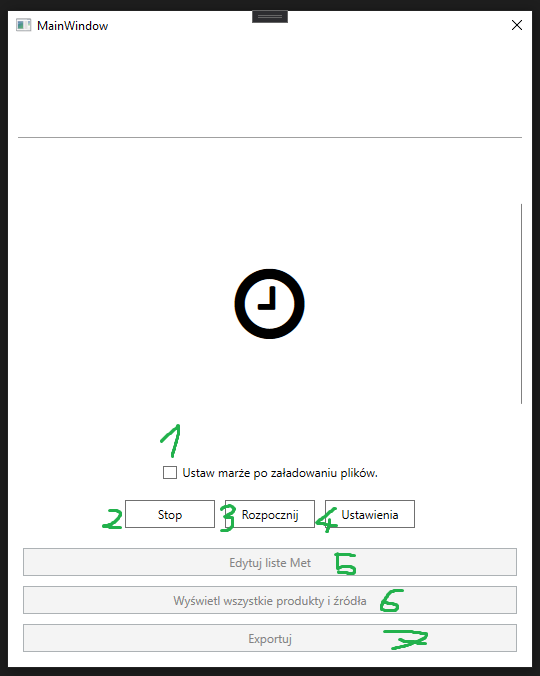
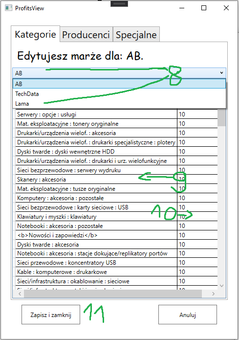
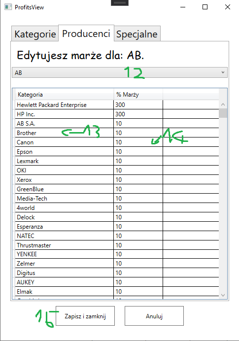
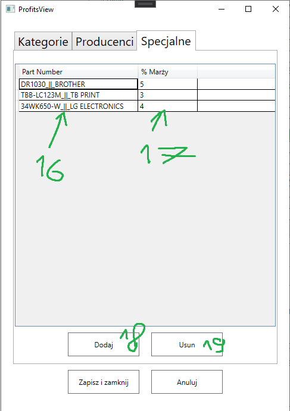
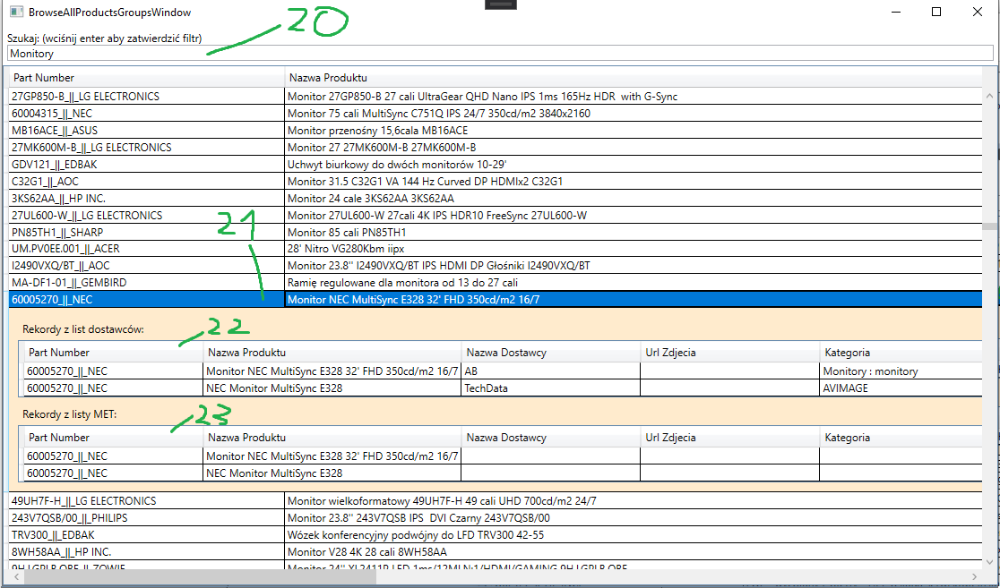
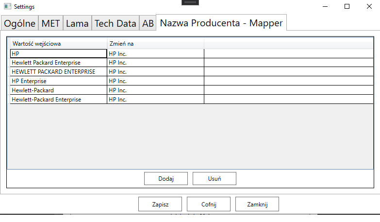

Główne okno
1. Jeśli zaznaczone to po pobraniu i załadowaniu plików zostanie wyświetlone kolejne okno. Nowe okno umożliwi edytowanie marż dla produktów, kategori i producentów.
2. Zatrzymuje prace programu.
3. Rozpoczyna prace programu.
4. Otwiera konto ustawień.
5. Pozwala edytować listę produktów specjalnych MET. (Przycisk dostępny po wygenerowaniu listy)
6. Pozwala przeglądać wszystkie produkty od dostawców (z wyłączeniem produktów specjalnych MET).
7. Zapisuje finalną listę w postaci CSV do wybranego pliku.
Okno marży
Cena jest obliczana uwzględniając następujące priorytety marż:
- Marże Specjalne
- Marże dla Kategorii
- Marże dla Producentów
- Domyślna marża
Marża dla kategorii
Okno pozwala edytować marże dla wybranych kategorii. Każda kategoria jest przypisana do dostawcy. Edytując marże dla kategorii 'XYZ' u dostawcy 'A' sprwi, że wszstkie produkty z tej kategorii u tego dostawcy bedą obliczone według wprowadzonej marży. Nie wpłynie to jednak na produkty u dostawcy 'X' mimo, że taka kategoria również tam będzie występować.
8. Wybór dostawcy dla którego chcemy edytować marże/kategrie.
9. Nazwa kategorii.
10. Marża wyrażona w procentach.
11. Przycisk zapisz i zamknij. Zamknie i zapisze wprowadzone zmiany a program będzie kontynuował prace.
Marża dla producentów.
Zasada działania jest dokładnie taka sama jak w przypadku kategorii.
12. Wybór dostawcy dla którego chcemy edytwoać marże/producentów.
13. Nazwa producenta.
14. Marża wyrażona w procentach.
15. Przycisk zapisz i zamknij. Zamknie i zapisze wprowadzone zmiany a program będzie kontynuował prace. (jest to ten sam przycisk co w 11)
Uwaga
Na liście występują nazwy producentów wczytane z plików ale jeszcze nie zmienione za pomocą ustawień mappera! Oznacza to, że jeśli mapper zmiena nazwę z HP na HP Inc. to marża dla producenta HP nie zostanie zastosowana.
Marże specjalne
Są to marże na wybranych produktach i tyczą się one wszystkich dostawców.
16. Part Number produktu
17. Marża wyrażona w procentach.
18. Otwiera okienko do wyszukiwania produktów aby dodać je na listę.
19. Usuwa wybrany produkt z listy.
Przegląd finalnej listy.
Okno pozwala przeglądać finalną liste (z wyłączeniem specjalnych produktów met).
20. Filrt - wyświetla tylko te produkty, które posiadają w jakimkolwiek polu wpisaną wartość.
21. Wybrany produkt - Produkt (wartośći) jaki trafi do listy CSV.
22. Lista źródłowa produktu. Są to rekordy, które zostały wczytane z plików od dostawców ab/techdata/lama.
23. Lista rekordów z tym produktem z pliku MET.
Ustawienia
Nazwa Producenta - Mapper
Na tej stronie ustawień definiujemy mapowanie wartośći wejściowych dla pola Nazwa Producenta. Po lewej stronie określamy wartość wejściową a po prawej na jaką wartość nazwa producenta ma być zamieniona.